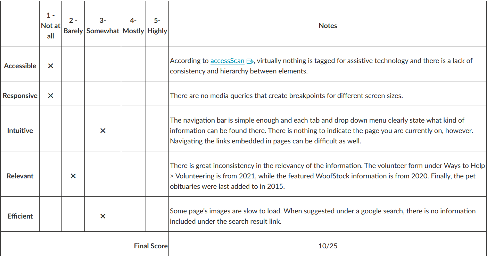
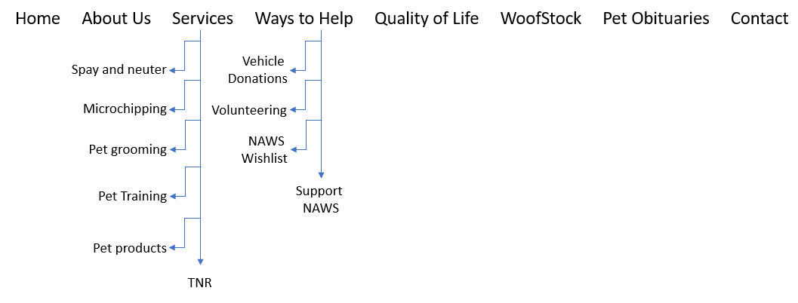
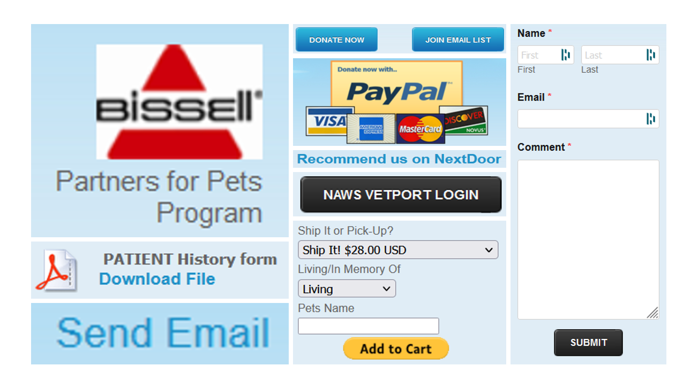

Discovery and Process
For my final project, I chose the website belonging to the nonprofit organization Northland Animal Welfare Society.
Website Audit
The very first step towards creating the website you see now was to analyze the original site. A summarized review of the page can be seen in the following chart:
Looking first at the website's strengths, the website does a great job of providing valuable information pertinent to the organization. If the organization does not have the proper information, or another site provides said information better, the website does a great job at referring the user to the other site. The buttons and links are also dynamic and clear to identify. Finally, the website has plenty of images to accompany the text.
One thing the site could improve on is creating a more user-friendly design. The home page in particular has a bunch of images and text placed in seemingly random locations and has an unclear hierarchy. The readability of the site could be improved upon with the reorganization of the pages’ content alongside some color changes. Many links and buttons have a blue coloring against the blue background, so changing the color of one of these elements would improve contrast on the page. Some links also do not open a new tab when leading the user to an external site, which can prove frustrating to users.
Referring back to the navigation of the site, the navigation bar has a clear and organized structure at first glance.
The majority of the navigation bar links clearly indicate what information can be found within (the least clear links would be WoofStock and TNR). However, things become less clear upon the arrival of many of the pages. As seen in the site map, the two pages that summon a drop-down menu are the Services and Ways to Help pages. When you click either of those links (rather than the drop-down page links) it takes the user to a page that doesn’t include all of the same links as found in the drop-down menu. This can make navigation confusing and frustrating to the user.
Overall, there is not a clear branding theme throughout the site. There are multiple button formats throughout the site with no clear difference between them. There is also no clear logo worked into the site, though images of a logo can be seen in the top left corner of the home page and in a poster regarding microchipping on the Services page.
The most concerning issues with the site are in regard to its content and responsiveness.
The content is extremely out of date, with much of it being up to four years old. It is clear that only some of the information has been updated throughout the last few years with the last indication of an update being found on the Support NAWS page with a 2021 wish list.
Finally, the site is not responsive when resizing the viewport. There is a mobile view when you access the site from a mobile phone. However, when you compress the web browser on your desktop to the size of a mobile screen, the site does not respond.
Design Brief
Throughout my redesign, my number one focus was creating a responsive site.
Secondary to this was content organization. All of the content, while outdated, was there. It simply needed to be reorganized to create a logical flow. I did this by removing any random blocks of content and creating clear sections that followed one another. In regards to the relevancy of the content, I did not have access to current information, so I simply removed the information that was clearly outdated.
On the original site, some pages did not have enough content to warrant its own page, so I simplified the content into the following pages:
- Home
- Services
- Support NAWS
- Obituaries
- Contact
To avoid losing content, I included content from removed pages into the pages they were most related to. For example, with the Services and Support NAWS pages, I took the information from each page in their dropdown menus and incorporated them into one page. I also took the About Us information and added it to the Home page so the user could quickly get a feel for the organization. The only pages I did not incorporate information from were the Quality of Life and WoofStock pages. This was because the Quality of Life information could not be seamlessly included in one of my chosen pages, and the WoofStock information was too outdated.
Below are images that represent my process towards creating the website you see now:
I had a lot of fun creating this website with plenty more ideas on how to improve the design. Overall, I'm proud of what I was able to accomplish and am eager to build upon the knowledge gained throughout this course.